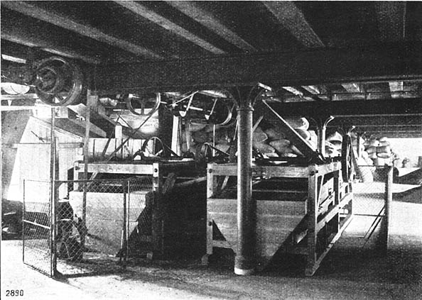

Hydrostatische Waage
Machines
| Source | Hillmann, Paul. 1910. Die deutsche landwirtschaftliche Pflanzenzucht. Berlin: Deutsche Landwirtschafts-Gesellschaft |
|---|---|
| People | Hering, Karl Ewald Konstantin (1834-1918) |
| Sites | Physiological Institute, University of Leipzig (1909) |
| Related Literature | Westphal, Rudolf. 1865. Geschichte der alten und mittelalterlichen Musik. Breslau: F. E. C. Leuckart (Staatliches Institut für Musikforschung) |
| Comment | By 1900 neuroscientists had established the image of a neural-network brain, whereas their knowledge about glial cells was still at the level of 'nerve glue. |
| Description | Test |